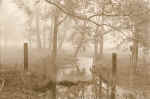

Crescent
Dragonwagon
Estimated
final date of frost
Estimated final
date of frost, Zone 6: May 5.
You put your tender plants out two weeks later.
Climatically, the odds are good; it probably
won’t freeze, and they’ll survive. The ground
is warm, and your Big Boys and jalapenos,
impatiens ‘Little Twinkle’, holy basil
will probably be protected from inclemency, and harm.
Yet I
remember 18 inches on May 9
(that year when I, inbounding from the East, could not land in
Lafayette).
And hail, two Aprils in a row, left us all peachless.
Fronts had met and clashed like titans, loud and strange, above.
Five minutes made the orchards into holocausts
of beaten useless blossom-covered ground below,
odd white balls still melting calmly on the sodden ruin.
This has some relevance to love.
There are
some calculations best avoided
by those who say, "Ah well, it’s for the best."
They had to ship in fruit from California, twice,
to Clarksville, where they hold Peach Fest.
Protection’s not available
to those who raise a pig or grow a fruit.
We bite July’s Red Havens, sweet and acid:
juice, which trails our chins, explodes in yellow, red, and pink,
the fleshy meat of summertime within our mouths, and
fiber between teeth. We don’t suspect the work and the travail,
and all it took to give us what we eat.
In this, a farmer
or an orchardman’s like us.
A day that ought to be pure spring may freeze,
you tend while knowing, unprepared to be reminded,
there are no guarantees.
|

J. Porterfield |
{kind=link}
{kind=link}